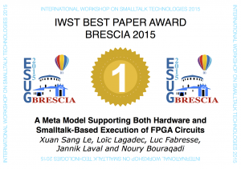

The video below presents an experiment made by two students at Mines Douai (Max MATTONE and Suzanne SHOARA) to achieve indoor localization based on WiFi signals.
Gold Medal for our IWST Paper

Our paper presented at the International Workshop on Smalltalk Technology 2015, Brescia Italy, as part of the PhD of LE Xuan Sang received the 1st prize, offered by the Lam Research Corporation.
A Meta Model Supporting Both Hardware and Smalltalk-based Execution of Fpga Circuits
High level synthesis (HLS) refers to an automated process that creates a digital hardware from an algorithmic description of some computation. From the perspective of Smalltalk, this process consists in converting a code from the OO level to the register transfer level (RTL), that supports direct compilation to the hardware level. In this paper, we present first steps to achieve this process. We introduce a Smalltalk-based meta-model that allows to express descriptions (i.e. models) of digital circuits. These descriptions materialize as Smalltalk code. A such circuit description can be run on top of the Smalltalk VM, simulating the parallelism intrinsic to hardware. Alternatively, it can be compiled into a binary representation directly transferable to FPGA chips, which can run and exchange data with Smalltalk objects.
PharoJS Got a Silver Medal at ESUG 2015


PharoJS won the second prize at the ESUG 2015 Innovation Technology Awards.
Develop in Pharo, Run on JavaScript

We are glad to announce PharoJS, which is an infrastructure to run Pharo code on top of JavaScript. The goal of PharoJS is to allow developers benefit from the power of Pharo while targeting platforms that support JavaScript.
For example, PharoJS can be used to develop client side web applications. It can also be used to support cross-platform mobile apps based on Phone Gap.
PharoJS is freely available under MIT License. It can be dowloaded from SmalltalkHub.
Writer Robot Using Lego Mindstorms EV3 and Phratch
A group of our students implemented this nice Writer Robot as part of a project where they learn programming using Phratch.
10th National Conference on Control Architectures of Robots (CAR 2015) Call for Papers
This conference is aimed at addressing important aspects of robot control architectures, with a specific emphasis on distribution, verification and validation, languages and modeling, and implementation of control architectures. It brings together researchers and practitioners from universities, institutions and industries, working in this field. It intends to be a meeting to expose and discuss gathered expertise, identified rends and issues, as well as new scientific results and applications around software control architectures related topics, through plenary invited papers.
Theme
Due to their increasing complexity, nowadays intervention robots, that to say those dedicated for instance to exploration, security or defence applications, definitely raise huge scientific and commercial issues. Whatever the considered environment, terrestrial, aerial, marine or even spatial, this complexity mainly derives from the integration of multiple functionalities: advanced perception, planning, navigation, autonomous behaviours, in parallel with communication or robots coordination enable to tackle more and more difficult missions.
But robots can only be equipped with such functions if an appropriate hardware and software structure is embedded: the software architectures will hence be the main concern of this conference.
As quoted above, the control architecture is thus a necessary element for the integration of a multitude of works; it also permits to cope with technological advances that continually offer new devices for communication, localization, computing, etc. As a matter of fact, it should be modular, reusable, scalable and even readable (ability to analyze and understand it).
Besides, such properties ease the sharing of competencies among the robotics community, but also with computer scientists and automatics specialists as the domain is inherently a multidisciplinary one.
Numerous solutions have been proposed, based on the “classical” three layers architecture or on more “modern” approaches such as object or component oriented programming. Actually, almost every robot integrates its own architecture; the workshop will thus be a real opportunity to share reflections on these solutions but also on related needs, especially on middleware for robotics, which are of particular importance in multi-robot applications for instance.
Hence, this conference on control architectures of robots aims at gathering a large number of robotics actors (researchers, manufacturers as well as state institutions) in order to highlight the multiple issues, key difficulties and potential sources of advances.
Schedule – Dates
- Paper submission (full paper or extended abstract): May 18 2015
- Paper Acceptation Notification : May 29 2015
- Camera Ready due : June 29 2015
- Conference: 29-30 June 2015
Submission Guideline
- Even if CAR is a french conference, we prefer articles written in english
- No specific style is asked : latex article style is OK
- No limit on article length, usually articles for CAR are between 6 and 17 pages long !
Web Page
http://car-conference.fr/
Scientific Committee
- David Andreu LIRMM, Univ. Montpellier 2
- Noury Bouraqadi Ecoles des Mines de Douai,
- Jacques Malenfant LIP6, UPMC
- Roger Pissard-Gibollet INRIA Grenoble,
- Julien Ponge CITI-INRIA, INSA de Lyon
- Olivier Simonin CITI-INRIA, INSA de Lyon
- Serge Stinckwich UBCN & UMMISCO, IRD/UPMC
A ROS-based Testbed for Large-scale Robot Simulations Using a Computer Cluster
Collaborative Exploration of Indoor Environment with Two RobuLAB-10 Robots
ROS packages for multi-robot exploration
Recently, we released several ROS packages for multi-robot exploration, including:
- explore_multirobot http://wiki.ros.org/explore_multirobot: is a multi-robot version of the explore package.
- map_merging http://wiki.ros.org/map_merging: merges multiple maps with knowledge of the initial relative positions of robots.
- tf_splitter http://wiki.ros.org/tf_splitter: decomposes the /tf topic into multiple ones.
- pose_publisher http://wiki.ros.org/pose_publisher: provides current position and orientation of the robot in the map.
These packages have been tested in ROS Groovy. However, Groovy is EOLed and there are no documentation or release jobs running anymore. We will test in more recent versions in order to improve our wiki.
Open Position for a Post-Doc in Multi-Robot Systems for Rescue Operations
As part of the Sucré ongoing project (http://car.mines-douai.fr/category/project/sucre/) the Ecole des Mines de Douai is offering a 12 months Post-Doc in multi-robot systems. This postdoc aims at proposing and developing original solutions to allow a robotic fleet to autonomously explore an indoor environment to provide useful information to firemen (e.g. maps, dangerous areas, victims to rescue).
Candidats should have a solid background in one of the following areas:
-coordination algorithms for multi-robot systems.
-mobile robot programming and software control architectures.
-Robot middleware such as ROS.
A background in dynamic languages would be a plus.
To apply, candidates should send a cover letter describing their background, a CV, and contact info for two references. The application materials should be sent by email to Prof. Noury Bouraqadi: noury.bouraqadi(AT)mines-douai.fr